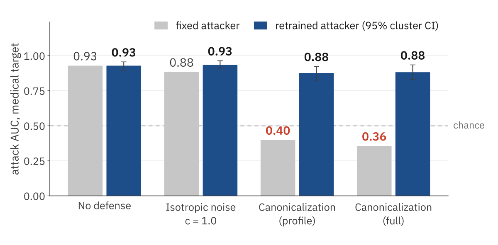
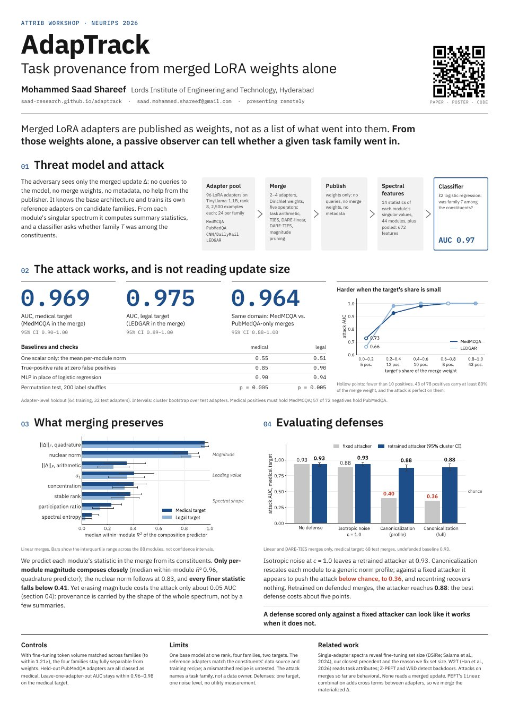

ATTRIB Workshop · NeurIPS 2026
AdapTrack: Task Provenance from Merged LoRA Weights Alone
Lords Institute of Engineering and Technology, Hyderabad
01Abstract
Merged LoRA adapters are published as weights, not as a list of what they were trained on. We ask whether that list is recoverable from the weights alone, as a question of task-family provenance rather than contributive attribution. Our adversary is passive: it observes only the merged parameter update — no queries to the model, no merge weights, no metadata, no cooperation from the publisher — and computes summary statistics of each module's singular spectrum. On a pool of 96 adapters spanning four task families, a classifier over those statistics determines whether a given family was among a merge's constituents at AUC 0.969 and 0.975 for two targets, with true-positive rates of 0.85 and 0.90 at zero false positives, under adapter-level holdout, cluster bootstrap intervals over adapters, and a permutation null. Examining what merging preserves, we find that among the predictors we test, only the one for total per-module magnitude tracks composition closely (median within-module R² = 0.96); the nuclear norm follows at 0.83 and every finer spectral statistic falls below 0.41. We then evaluate two defenses against an adaptive attacker who retrains on defended features; neither reduces the attack below 0.87 AUC, against an undefended baseline of 0.93 on the same subset. One of them, canonicalization, appears to drive the attack to 0.36 — below chance — when scored against a fixed attacker, where a retrained attacker still reaches 0.88.
02Results at a glance

03Cite
@inproceedings{shareef2026adaptrack,
title = {AdapTrack: Task Provenance from Merged {LoRA} Weights Alone},
author = {Shareef, Mohammed Saad},
booktitle = {ATTRIB Workshop, NeurIPS},
year = {2026},
url = {https://saad-research.github.io/adaptrack/}
}
